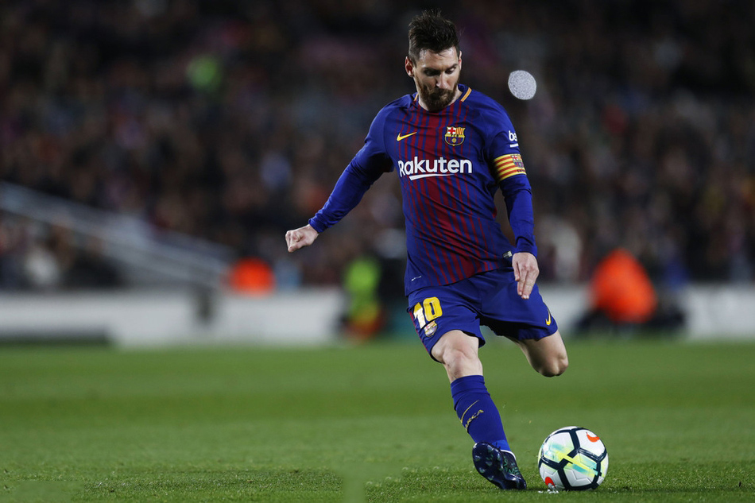

早上6点！巴萨收到坏消息，令梅西彻底无奈，离队概率越来越大
北京时间7月9日早上6点钟，法国记者Florent Torchut透露，梅西依旧是自由身，不过他想同巴萨续约，并且梅西愿意在薪资上做出极大的让步。据了解，梅西已经同意降薪一半以上，以此来让自己留在巴萨，继续为巴萨效力。

因为该记者还表示，即便梅西同意降薪，并且降薪的幅度很高，但是巴萨的薪资仍未达标。也就是说，巴萨的薪资水平依然没有达到西甲工资帽的允许范围之内。这样的话，巴萨是无法给梅西完成注册事宜的，即便巴萨签下了梅西，想必梅西也没办法帮助巴萨参赛。
可见，梅西的续约最新进展有些缓慢，并且巴萨极有可能无法签下梅西。因为当梅西已经降薪时，巴萨的薪资水平依旧达不到西甲的基本要求。这也就是说，在巴萨的队内，他们的高薪球员太多了，巴萨的薪资水平有些离谱。如果巴萨想用最佳阵容去参加西甲联赛，那么他们必须要出售球员，当那些高薪低能球员离队后，巴萨的薪资水平才能达到西甲的标准，届时，薪资结构合理的巴萨可以去参加西甲联赛。
但是卖人谈何容易呢？毕竟像库蒂尼奥、登贝莱、格列兹曼、乌姆蒂蒂这样的球员，几乎都没人要，这使得巴萨在清理阵容时十分棘手。最终，他们没办法出售球员，从而无法签下梅西，这是极有可能要发生的事。